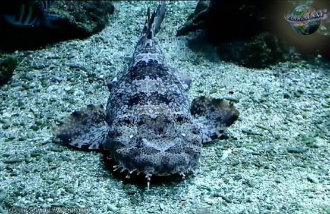

TIBURÓN ALFOMBRA MANCHADO
Orectolobus maculatus

Su forma aplanada y su piel manchada le permiten confundirse con el lecho marino y los arrecifes mientras caza.
- Nombre científico: Orectolobus maculatus
- Camuflaje: Su cuerpo ancho y plano se pega al lecho marino; las manchas y colores de su piel imitan rocas, arena y arrecifes.
- Hábitat: Regiones costeras de Australia, Indonesia, Papúa Nueva Guinea y Filipinas; algunas especies se encuentran en el sur de Japón.
- Sentido: Visión.
- Uso: Caza.
- Función: Obtener alimento y ocultarse.